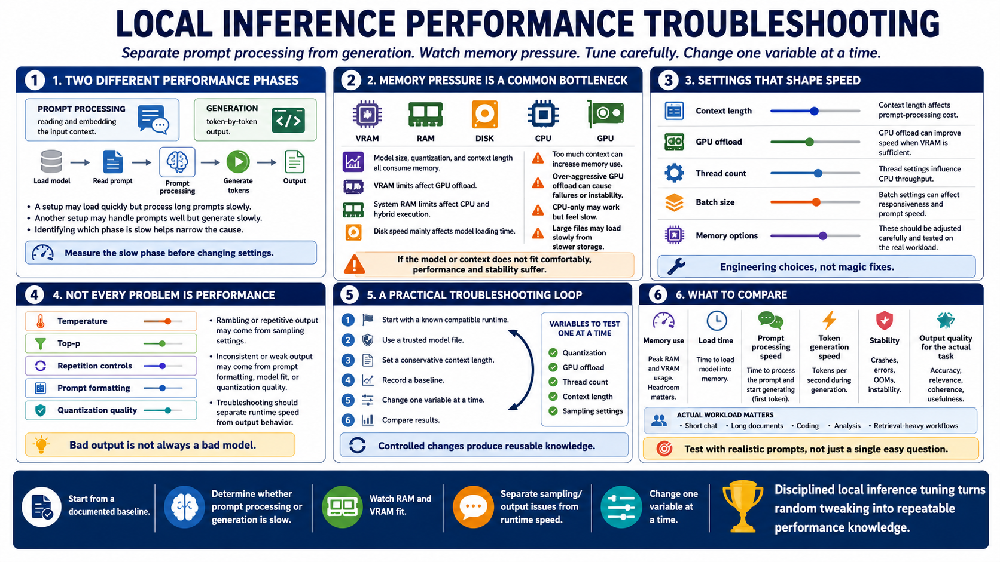

Performance and Troubleshooting
Connecting to LMS... Progress: in progress

Narration
Performance issues in local inference often fall into two categories: slow prompt processing and slow generation. Prompt processing is the work of reading and embedding the input context. Generation is the token-by-token output step. A setup may load quickly but generate slowly, or handle short prompts well but struggle with long context. Knowing which phase is slow helps narrow the cause.
Memory pressure is one of the most common problems. A model, quantization, or context length may exceed available VRAM or system RAM. GPU offload settings may be too aggressive, causing failures or instability. CPU-only execution may work but feel slow. Disk speed can affect model loading time, especially with large files. Batch size and thread settings can help, but they should be adjusted carefully and tested with the actual workload.
Sampling settings affect output behavior and can be mistaken for performance or model quality issues. Temperature, top-p, repetition controls, and related options influence how deterministic or varied the output feels. If results seem rambling, repetitive, or inconsistent, the issue may be sampling configuration, prompt formatting, model fit, or quantization quality. Troubleshooting should separate runtime settings from model capability.
A practical troubleshooting loop starts with a known compatible runtime, a trusted model file, conservative context length, and a documented baseline. Then change one variable at a time: quantization, GPU offload, thread count, context length, or sampling settings. Compare memory use, speed, and output quality. This disciplined approach is slower than random tweaking, but it produces knowledge you can reuse.